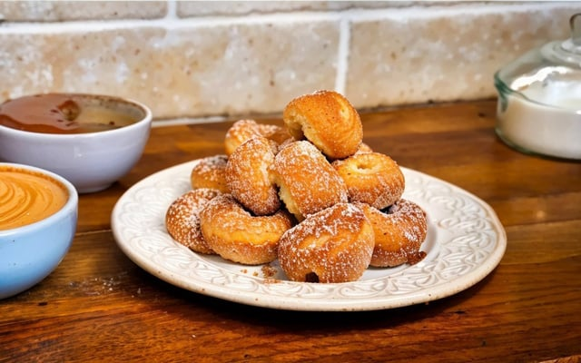

Bolinho de Chuva

O bolinho de chuva doce é um petisco delicioso para todas as idades!
Com gostinho de casa de vó, ele é perfeito para o lanche da tarde, acompanhado de um café quentinho. Confira agora mesmo como fazer bolinho de chuva simples!
Ingredientes
- 2 ovos
- 1 xícara de leite
- 1 colher de fermento
- 1 colher de canela
- 2 colheres de açúcar
- 2 xícaras e meia de farinha de trigo
- 3 colheres de açúcar
Passo a passo
- Em um recipiente, adicione os ovos, o açúcar, o leite, a farinha de trigo e o fermento, depois misture-os até obter uma massa lisa e homogênea.
- Com a ajuda de uma colher, pegue porções da mistura e despeje em uma panela com o óleo quente.
- Retire do fogo quando estiver no ponto, depois misture a canela com açúcar e salpique no bolinho de chuva já frito.
Home